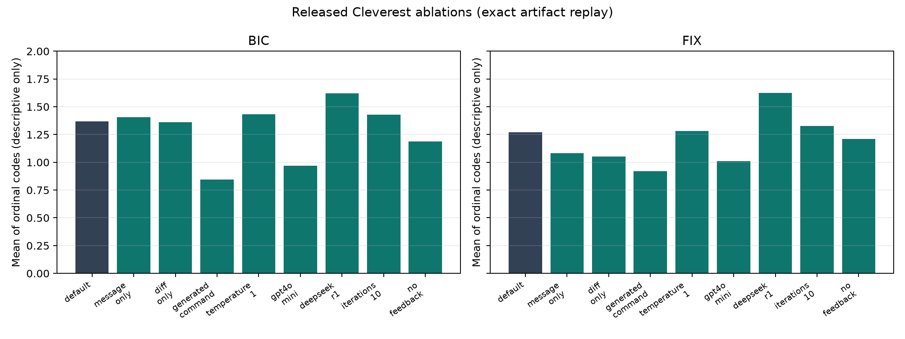
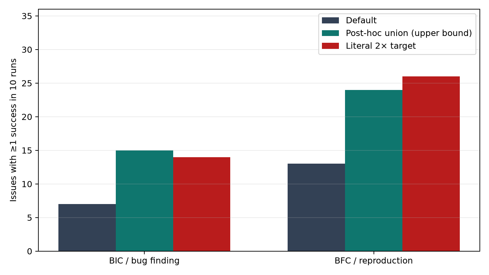

Executive verdict
Terminology and evidence standard
- REPRODUCED rerun from released inputs with recorded hash/output.
- VERIFIED directly present in paper, code, or data and independently checked.
- CONCERN disclosed design choice with a validity cost; not misconduct.
- POC exploit demonstrated locally with a harmless marker.
- UNRESOLVED evidence needed to decide; no adverse inference.
Scope, frozen identity, and limitations
| Object | Frozen identity |
|---|---|
| Paper | FSE26-llmtesting.pdf; SHA-256 b3f45602…61560e; PACMSE/FSE DOI 10.1145/3808129. |
| Artifact | mirror commit bac4344ab3813a138608e86da8f1103dfe11ff62, equal to canonical chinggg/Cleverest tag artifact-v1.1. |
| Archive | Zenodo concept DOI 10.5281/zenodo.19616583 → v1.1 record 20319490; repository repdata.tar.xz SHA-256 6355a4a1…c498933. |
| Aggregate | figure/aggregated_results.csv SHA-256 3780d09f…cecc37. |
Limits: no API credentials were supplied; Docker daemon was unavailable; upstream issue dates and all 72 crash stacks were not independently re-triaged. “No evidence” is limited to inspected paper, Git history, released logs/inputs/CSVs, deterministic regeneration, and POCs. The review did not contact the authors, so benign explanations may exist.
The requested claude-fable-5 model was attempted across 37 prior sessions and repeatedly returned two empty responses, aborting the agent. Work proceeded on the requested independent review model gpt-5.6-sol-xhigh. This tooling failure is disclosed rather than hidden.
Reproduction: what actually ran
- Cloned and hashed artifact/metadata; checked Git object integrity.
- Scanned the tar: 123,995 members (122,486 regular files, 1,509 directories), no traversal, absolute path, symlink, or hardlink.
- Extracted raw data and ran authors’
gencsv.pyover 1,500 subject summaries. Output: 6,760 rows, byte-identical to released aggregate. - Executed all cells in
figure/result.ipynb, exit 0. It regenerated Tables 2, 3, and 5; executed notebook SHA-256a3c5c1d…7524cd. - Ran independent analysis script, 50,000 issue-bootstrap resamples, paired exploratory tests, and generated machine-readable JSON.
- Ran two POCs and the hardened prototype’s 13 tests, Ruff, and BasedPyright: all pass.
| Scenario | rows | mean code* | reach ≥1/10 | change ≥1/10 | bugs ≥1/10 | successful trials | mean seconds |
|---|---|---|---|---|---|---|---|
| BIC / finding | 360 | 1.3667 | 31/36 | 20/36 | 7/36 | 60/360 | 79.253 |
| BFC / reproduction | 360 | 1.2694 | 25/36 | 17/36 | 13/36 | 107/360 | 52.567 |
*Exactly reproduces Table 2, but the paper calls 0/1/2/3 ordinal; an arithmetic mean assumes equal spacing between none, reached, changed, and bug.

Data-dependent transformations
The aggregation code is not a pure parser. Across 6,760 rows it changes 116 raw R labels containing behave to score 2, gives 84 different-crash X rows score 2, manually gives four X rows reach score 1, and sets one nonreproducible Poppler message-only D to N. Comments make these visible to artifact readers, but frequencies/adjudication are absent from the paper. These affect ordinal scores, not evidence of table fabrication.
Full commands, hashes, and limitations: reproduction.md.
Claim-by-claim audit
| Claim | Finding | Assessment |
|---|---|---|
| “Under 2 minutes … as many bugs as WAFLGo in 24 hours.” | On the 50 WAFLGo-runnable commits, pooled issue-any counts are indeed 18 vs 18 (Cleverest 7 BIC+11 BFC; WAFLGo 10+8). Pooling hides that Cleverest loses the motivating BIC scenario, 7 vs 10, and wins BFC, 11 vs 8. “24 hours” is a campaign budget, not the mean successful TTE. | literally pooled, materially selective |
| “ClevFuzz … more than twice as many bugs in both scenarios.” | Reproduced: 20 vs 10 BIC is exactly 2×, not more; 18 vs 8 BFC is 2.25×. The pooled 38 vs 18 is >2×. | false wording for BIC |
| ClevFuzz ~6 h vs WAFLGo ~20/22 h. | Notebook reproduces 05:42/06:11 vs 19:40/21:49, but explicitly assigns 24 h to five per-scenario cases whose initial seeds already crash. Setting those to t=0 yields roughly 15.0/16.8 h. Ordering remains; effect size shrinks. | convention-sensitive |
| “Zero-shot” CI bug finding. | Default prompts receive per-issue commands selected with hindsight. JQ #3262 is given jq .[54E100]=7 @@—the rare triggering index is in the command. Libxml2 cases receive bug-specific flags. For a BIC, these can derive from a future bug report unavailable when the commit landed. | temporal/target leakage |
| Commit message enhancement “significantly increased the number of bugs.” | Enhancements are generated from the ground-truth bug report and applied to 29 non-perfect cases. Exploratory issue-level score test is strong (mean +0.70; bootstrap 95% +0.39…+1.04; unadjusted Wilcoxon p=.00027), but binary bug-any changes (7 gained, 2 lost) give exact McNemar p=.180. No test was in the paper. | score shift; bug-count significance unsupported |
| Effectiveness “scales with LLM size/capacity.” | Three models differ in vendor, training corpus, architecture, reasoning, serving, and unknown parameter count (GPT-4o size is undisclosed). DeepSeek improves mean scores in replay, but size is not identified as cause. | causal confounding |
| Temperature increase implies more diversity. | No diversity metric is defined or measured. Effectiveness and diversity are different constructs; FIX score delta is only +0.014 with CI crossing zero. | non sequitur |
| Feedback is “crucial.” | No-feedback lowers mean code (BIC −.178; FIX −.061), yet bug-any rises 7→10 BIC and 13→14 FIX. Conclusions depend on the ordinal aggregate, and unadjusted p-values would not survive broad multiple-comparison correction. | metric-dependent |
| “No false positives” and “no flakiness.” | Every main benchmark commit is retrospectively known buggy. No benign-commit false-alarm denominator or flakiness protocol is reported. System-level execution does not logically imply zero false positives. | unsupported |
| Tables/results available and reproducible. | Raw summaries, prompts, answers, inputs, aggregate CSV, fuzz CSVs, scripts, and notebooks are present; exact offline regeneration succeeds. | confirmed |
Unsupported significance language
The paper uses “significantly” for model power, message enhancement, ClevFuzz vs WAFLGo, and directed vs undirected generation, but reports no hypothesis test, confidence interval, effect size, or multiplicity rule. Our tests are explicitly exploratory and do not repair a non-preregistered analysis. Klees et al.’s fuzzing-evaluation guidance recommends repeated trials, statistics, documented seeds, and ground-truth bug counting; ten trials are useful but below their 30-trial demonstration practice.
Wrong assumptions, leakage, and potential evaluation cheating
1. Ground-truth command leakage is the largest realism problem
The harness needs a command to run a program, but default COMMANDS are not merely generic entry points. They include issue-specific options/values selected from knowledge of the eventual bug. The GENCMD ablation confirms the advantage: across the 14 applicable issues (28 commits), mean codes fall sharply when the model must synthesize commands. Calling the default BIC setup “zero-shot” obscures a substantial human-provided, future-derived hint. This choice is disclosed, so we classify it as evaluation design leakage, not covert cheating.
2. Training-data/memorization check is insufficient
Character-level normalized Indel similarity against one online PoC cannot exclude semantic memorization, memorization of a committed regression test, or issue retrieval keyed by an issue number. A semantically equivalent structured trigger may have low character overlap. RQ3 reduction only proves the model uses prompt words; keyword-cued recall would also degrade when a key word is removed. No cutoff-stratified analysis is reported, and at least JQ CVE-2025-49014 postdates GPT-4o’s documented October 2023 knowledge cutoff—so it is incorrect to say all targets predate the cutoff.
3. Base-rate/construct mismatch
The CI proposal applies to arbitrary new commits, but the main dataset contains 100% commits already known to introduce/fix reproducible failures. This estimates conditional sensitivity on selected positives, not precision, false-alert rate, or developer workload in CI. “Reach any changed line” is also a weak proxy when diffs touch hot code.
4. RQ3 oracle contamination and selection
Gemini receives the original commit and corresponding bug report; humans verify that key bug elements enter the enhanced message. Table 4’s Z3 #7252 message effectively states the trigger recipe (nested re.loop, bounds 0 and 1). Enhancement excludes already-perfect cases, while reduction selects cases already reaching code. Floor/ceiling and regression-to-the-mean favor the predicted directions; no irrelevant-word or blind-paraphrase control is run.
5. Gaming surfaces
The two verified POCs allow a malicious or benchmark-aware system to obtain credit without producing an authentic target crash: shell commands under GENCMD, and fake sanitizer text conditioned on a version difference. Released input grep found zero marker strings, so potential is proven; actual cheating is not.
Security vulnerabilities
LLM command injection
Exact parser/guard/constructor POC accepts ; printf VERIFIED > /tmp/…. script -c gives it shell semantics. *High if run outside a strongly disposable/no-secret sandbox; container-scoped otherwise.
Oracle spoof
Exact check_output_bug accepts target-printed ERROR: AddressSanitizer:; differential branch assigns final B.
Crash identity absent
Fuzz adjudication checks coarse crash strings/version, not stack/source identity against intended bug. Actual overcount remains unresolved.
Supply chain/root
Mutable base tag, unverified yq download, unpinned apt packages, root container, arbitrary sourced configs. Tar archive itself is clean.
parsed=target @@; printf VERIFIED > /tmp/cleverest_cmd_injection_poc constructed=timeout 30s /definitely/missing/build/target SAFE_INPUT; printf VERIFIED > /tmp/cleverest_cmd_injection_poc marker=VERIFIED bug_before='' bug_after=heap-buffer-overflow classified_BIC_final=B
Detailed dataflow, impact, mitigations, negative findings, and Docker caveat: security_audit.md.
Irreproducibility and artifact defects
- Good: default code pins
gpt-4o-2024-08-06, vendored client, exact commits/configs, full transcripts/inputs, artifact DOI/checksums, Docker version tag/digest link. - Docs mismatch: README reproduction uses mutable
gpt-4owhile code defaults dated snapshot. - Nondeterminism: no API seed/system fingerprint; OpenAI documents nondeterministic output and only best-effort seeds. Statistical, not bitwise, replication is possible.
- DeepSeek: unversioned
deepseek-ai/deepseek-r1through NVIDIA free endpoint; serving/weights/rate behavior cannot be frozen. - Notebook environment: no lock/requirements for aggregation notebooks. We reconstructed a working environment; future APIs may differ.
- Docker static concern: scripts are copied before
WORKDIR /clever; undefined$UNAMEis used for yq. Runtime not tested because daemon was unavailable. - Live feasibility: 1,500 LLM experiments plus hundreds of 24-hour campaigns, historical builds, API keys, and a high-memory WAFLGo analysis are far beyond the “smoke test”; cost estimate is not documented in artifact instructions.
AI slop / editorial-quality indicators
“AI slop” is not an authorship detector. These are objective camera-ready errors and low-value prose; they do not establish LLM use or fraudulent data.
| Verified item | Evidence |
|---|---|
| “six open-source C programs” | Paper evaluates eight; Z3 is principally C++, and the statement is stale/incorrect. |
| README: “six … three … and five” | 3+5=8; later README correctly says eight. |
| Issue #13087 | Not in Table 1; likely #13007/#13041 typo. |
| JerryScript #5155 | Dataset/Table 4 use #5153. |
| “four to five newest” | MicroPython contributes six. |
Table 3 Temp0.x | Verified directly in rendered PDF text on p.11, although text says temperature 1.0. |
| Notebook GENCMD stale assertion | Actual 280 rows (14 issues×2×10); code’s special-case comment expects 220 and emits a warning during clean execution. |
| Grammar/reference defects | Examples include “introduce evaluate the utility,” “Issue #550 of Libxml2 2,” malformed arXiv URL, and “more than twice” when one ratio is exactly 2. |
| “Vibe testing” Wittgenstein passage | Speculative branding adds no empirical support. Classified as editorial judgment, not a factual defect. |
Fraud and cheating determination
| Question | Determination | Why |
|---|---|---|
| Fabricated data? | No evidence found | Full raw summaries/transcripts/inputs; exact 6,760-row regeneration; consistent tables and counts. |
| Falsified transformations? | No proof; disclosure incomplete | Manual/data-dependent corrections are in code comments and reproducible, but not quantified in paper. |
| Covert benchmark cheating? | No evidence found | No crash-marker payload in 31,109 generated inputs; commands/results are released. Target-specific command hints are disclosed. |
| Evaluation allows cheating? | Yes, verified | Command-injection and oracle-spoof POCs; no intended-stack identity. |
| Misleading framing? | Yes | Scenario pooling, exact-vs-more-than-2× wording, target/future command leakage, unsupported significance, and base-rate mismatch. |
Fraud requires evidence of deceptive intent or knowing falsification. Methodological weakness, vulnerable code, selective wording, and typos do not meet that bar. Accordingly this report uses “wrong,” “unsupported,” “misleading,” or “vulnerable” where proven and does not accuse the authors of fraud.
Improvement attempt and the requested “2×” target
We implemented cleverest_plus: strict structured/base64 outputs, shell-free allowlisted argv, JSON/XML/PDF/text validators, coverage-fingerprint diversity, separated streams, sanitizer/top-frame signatures, and ambiguity for both-version crashes. The design adds commit-time-only retrieval, multi-candidate validity quotas, coverage-delta feedback, minimization, and budgeted short fuzzing. Thirteen tests plus lint/type checks pass.

| Measure | Default | Retrospective union of released LLM configs | 2× target | Result |
|---|---|---|---|---|
| BIC bugs ≥1/10 | 7/36 | 15/36 | 14 | Numerically >2×, but post-hoc and higher compute. |
| BFC bugs ≥1/10 | 13/36 | 24/36 | 26 | Not doubled; even the post-hoc ceiling misses. |
DeepSeek-R1 + temperature-1 configurations have a retrospective BIC union of 14/36, but choosing that pair after inspecting results and spending two configurations is not a fair prospective benchmark. Full released ClevFuzz replay gives 22/36 BIC and 20/36 BFC, also not 2× BFC. A valid score requires a preregistered budget, fresh non-public/post-cutoff commits, fixed model snapshots, and ground-truth stack adjudication.
Code: cleverest_plus/README.md. Design: improvement_design.md.
Required fixes for a defensible revision
- For BIC, use only information timestamped at/before the BIC; replace issue-specific commands with a generic documented harness or evaluate GENCMD as primary.
- Pre-register primary endpoint (per-trial bug rate or issue-any), budget, exclusions, transformations, crash identity, and statistics.
- Use stack/source ground truth; capture sanitizer reports on dedicated stderr/FD; treat both-side crashes as ambiguous.
- Remove shell execution. Use argv arrays, executable allowlist, non-root/no-network containers, no API key in test runtime.
- Evaluate benign recent commits to estimate false-alert rate and developer burden; hold out post-cutoff issues.
- Report scenarios separately in abstract; say “exactly twice” for 20 vs 10; present sensitivity with seed-at-time-zero.
- Replace character similarity with semantic/AST and committed-test comparisons, plus age/cutoff stratification.
- Publish lock files, immutable image digest in
FROM, full fuzz crash artifacts/stacks, and adjudication logs. - Correct issue IDs, program counts, Table 3 header, notebook 220/280 assertion, and grammar.
Sources and audit artifacts
- Audited paper PDF; DOI 10.1145/3808129.
- Paper-linked artifact mirror; canonical archived repository.
- Zenodo artifact concept DOI.
- OpenAI GPT-4o model/snapshot documentation and seed reproducibility note.
- Clang AddressSanitizer documentation.
- AFL++ v4.21c.
- WAFLGo artifact; USENIX Security 2024 paper.
- Klees et al., Evaluating Fuzz Testing.
- Levenshtein.ratio semantics.
- Local evidence: analysis JSON, ablation CSV, reproduction log, security audit, POCs and outputs.
Hash manifest
paper PDF b3f45602cd2a5a2fddcbc85f779b8d56ed606e0c9ce6a4c1d1b38e369961560e artifact commit bac4344ab3813a138608e86da8f1103dfe11ff62 repdata.tar.xz 6355a4a18659944f6226658729a9e7cdd0cfc3e53ae140036054cf457c498933 aggregate CSV 3780d09f479fff0d730f4a3a6c77c296be98d5e32807ef9208ea520464ecec37 merged WAFLGo 49c428c6456d3e798a5aec02e1273105dc572d90a374a1c968a65168d969d476 merged ClevFuzz 4f3885f8a9e73151e2224857b5f2ae76319c86e185fc4f306a2732d85c204119
Report generated locally. No external scripts, trackers, or fonts. Claims were reviewed against frozen evidence; links are primary sources where available. Retrieval date: 2026-07-10.